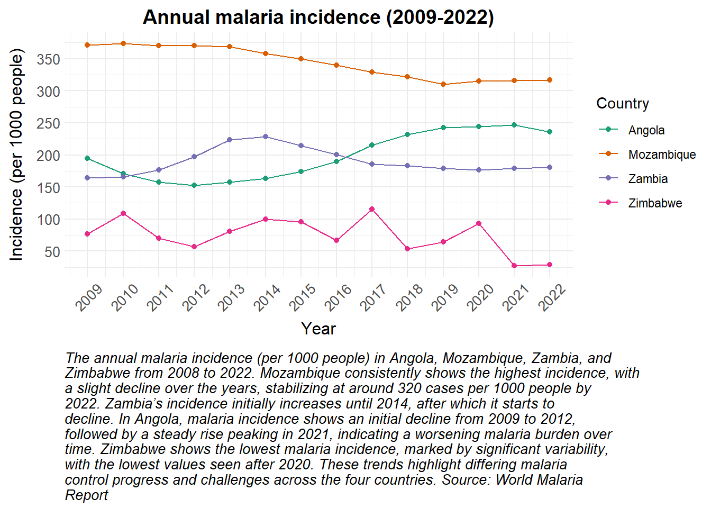
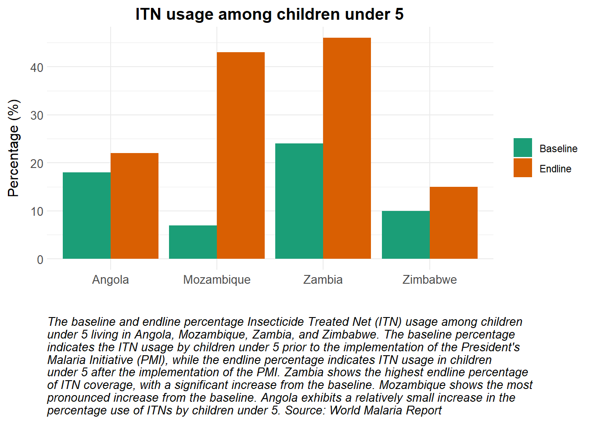
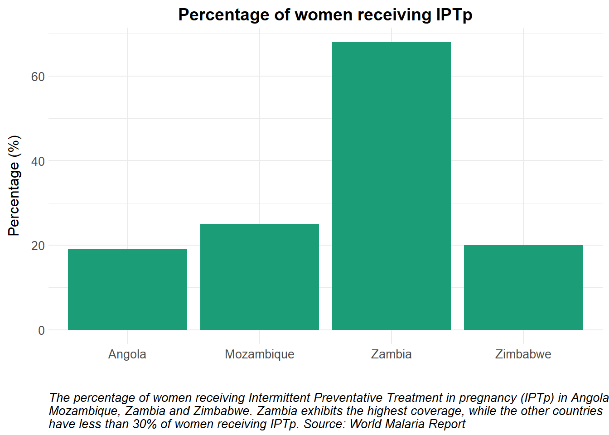

The U.S. Government’s focal point for the global fight against malaria, the U.S. President’s Malaria Initiative has helped save millions of lives and contributed to substantial gains in education, productivity, and economic development. PMI started as a five-year initiative with the goal of reducing malaria deaths by 50% in 15 African countries. Thanks to the bipartisan support of Congress and the generosity of the American people, PMI now works in 24 partner countries in sub-Saharan Africa and three programs in the Greater Mekong Subregion in Southeast Asia–representing about 90% of the global malaria burden. PMI delivers cost-effective, life-saving malaria interventions alongside catalytic technical and operational assistance to equip and empower partner countries to end malaria.
Accessing the data
Information on PMI’s life-saving malaria interventions and operational support to partner countries is available on the PMI website
• Under the “Where We Work” tab from the website, fact sheets for the 27 partner countries can be accessed in PDF format. You can right click on the country’s name to access the country’s fact sheet, yearly Malaria Operational Plans and download them.
• Under the “Impact” tab, data on malaria burden, PMI funding, PMI commodity investment and the program’s impact across partner countries are presented through an interactive map or illustrative graph. This map allows users to hover over individual countries to access detailed information on malaria cases, deaths, and associated metrics. Aside this, filters are also available to select the region or the country and sliders to select the year.
• In the “Resources” section, annual reports, comprehensive one-year Malaria Operational Plans (MOPs), technical documents, and reports detailing interventions in each partner country by year are available for download in PDF format. A search can be refined through the use of filters. The filters are for Technical areas, countries and dates.
What does the data look like?
The data are provided for each country on an annual basis and can be accessed through an interactive map or graphical representations. However, no downloadable Excel or CSV files are available. Users must manually extract the data from the map or graph in order to generate Excel or CSV files, should they wish to conduct analyses beyond those available on the website. The following examples illustrate the provided information.
Key points to consider
On the PMI’s website, the data are provided for each country on an annual basis and can be accessed through an interactive map or graphical representations.
The data is sourced mostly from the World Malaria Report (WMR)
Download Options: There are no downloadable Excel or CSV files available.
Manual Data Extraction: Users need to manually extract data from the map or graph to create Excel or CSV files for further analysis.
Yearly data might overlook the seasonal trends in malaria transmission, which are affected by variables like rainfall, temperature, and vectors abundance. This can result in either an overestimation or underestimation of the disease burden and the effectiveness of interventions.
Behavioral Changes: Changes in population behaviors, such as increased mobility, changes in agricultural practices, or urbanization, can influence transmission dynamics but may not be captured in annual data.
── Attaching core tidyverse packages ──────────────────────── tidyverse 2.0.0 ──
✔ dplyr 1.1.4 ✔ readr 2.1.5
✔ forcats 1.0.0 ✔ stringr 1.5.1
✔ ggplot2 3.5.1 ✔ tibble 3.2.1
✔ lubridate 1.9.3 ✔ tidyr 1.3.1
✔ purrr 1.0.2
── Conflicts ────────────────────────────────────────── tidyverse_conflicts() ──
✖ dplyr::filter() masks stats::filter()
✖ dplyr::lag() masks stats::lag()
ℹ Use the conflicted package (<http://conflicted.r-lib.org/>) to force all conflicts to become errors
Show the code
library(reshape2)
Attaching package: 'reshape2'
The following object is masked from 'package:tidyr':
smiths
Show the code
source(here::here("theme_health_radar.R"))
Annual malaria incidence in different countries over time can be easily visualised using line plots. The points plotted at each data point help to communicate that these are annual data, rather than continuous.
Show the code
incidence_pmi <-read_excel("data/malaria_incidence_PMI.xlsx")# Reshape the data from wide to long formatincidence_long <- incidence_pmi |>pivot_longer(cols =-Country, names_to ="Year", values_to ="Incidence") |>mutate(Year =as.numeric(Year)) # Convert Year to numeric for plotting# Convert 'Incidence' to numericincidence_long$Incidence <-as.numeric(as.character(incidence_long$Incidence))# Create a ggplot object with incidence_long dataggplot(incidence_long, aes(x = Year, y = Incidence, color = Country, group = Country)) +# Add lines connecting data points for each countrygeom_line() +# Add points at each data point for each countrygeom_point() +# Customize the x-axis to show every year in the data rangescale_x_continuous(breaks =min(incidence_long$Year):max(incidence_long$Year)) +# Customize the y-axis to show breaks from 0 to 400 in increments of 50scale_y_continuous(breaks =seq(0, 400, 50)) +# Apply a custom theme theme_health_radar() +# Apply a custom color scale scale_colour_manual_health_radar() +# Rotate x-axis text labels 45 degrees and adjust horizontal justificationtheme(axis.text.x =element_text(angle =45, hjust =0.5)) +# Add labels and title to the plotlabs(title ="Annual malaria incidence (2009-2022)",x ="Year",y ="Incidence (per 1000 people)",colour ="Country",# Add a caption with wrapped text for better readabilitycaption =str_wrap("The annual malaria incidence (per 1000 people) in Angola, Mozambique, Zambia, and Zimbabwe from 2008 to 2022. Mozambique consistently shows the highest incidence, with a slight decline over the years, stabilizing at around 320 cases per 1000 people by 2022. Zambia’s incidence initially increases until 2014, after which it starts to decline. In Angola, malaria incidence shows an initial decline from 2009 to 2012, followed by a steady rise peaking in 2021, indicating a worsening malaria burden over time. Zimbabwe shows the lowest malaria incidence, marked by significant variability, with the lowest values seen after 2020. These trends highlight differing malaria control progress and challenges across the four countries. Source: World Malaria Report", width =85) )

A paired bar plot is used to compare ITN usage in children under 5 in various countries, before and after PMI implementation.
Show the code
coverage_itn <-read_excel("data/nets_under5_PMI.xlsx")# Reshape the data for ggplotcoverage_itn_melted <-melt(coverage_itn, id.vars ="Country", variable.name ="Type", value.name ="Percentage")# Create a ggplot object with coverage_itn_melted dataggplot(coverage_itn_melted, aes(x = Country, y = Percentage, fill = Type)) +# Add bar plots with identity stat and dodge position for side-by-side barsgeom_bar(stat ="identity", position =position_dodge()) +# Apply a custom theme theme_health_radar() +# Apply a custom fill scale scale_fill_manual_health_radar() +# Add labels and title to the plotlabs(title ="ITN usage among children under 5",x ="", # No label for the x-axisy ="Percentage (%)",# Add a caption with wrapped text for better readabilitycaption =str_wrap("The baseline and endline percentage Insecticide Treated Net (ITN) usage among children under 5 living in Angola, Mozambique, Zambia, and Zimbabwe. The baseline percentage indicates the ITN usage by children under 5 prior to the implementation of the President's Malaria Initiative (PMI), while the endline percentage indicates ITN usage in children under 5 after the implementation of the PMI. Zambia shows the highest endline percentage of ITN coverage, with a significant increase from the baseline. Mozambique shows the most pronounced increase from the baseline. Angola exhibits a relatively small increase in the percentage use of ITNs by children under 5. Source: World Malaria Report", width =90),fill =""# No label for the fill legend )

The percentage of women receiving Intermittent Preventative Treatment in pregnancy (IPTp) in various countries is represented using a simple bar plot.
Show the code
# Define a single colour for the plotsingle_color <-"#1b9e77"coverage_iptp <-read_excel("data/IPTP_coverage_PMI.xlsx")# Create a ggplot object with coverage_iptp dataggplot(coverage_iptp, aes(x = Country, y = Percentage)) +# Add bar plots with identity stat and a single fill colorgeom_bar(stat ="identity", fill = single_color) +# Apply a custom theme theme_health_radar() +# Add labels and title to the plotlabs(title ="Percentage of women receiving IPTp",y ="Percentage (%)",x ="", # No label for the x-axis# Add a caption with wrapped text for better readabilitycaption =str_wrap("The percentage of women receiving Intermittent Preventative Treatment in pregnancy (IPTp) in Angola, Mozambique, Zambia and Zimbabwe. Zambia exhibits the highest coverage, while the other countries have less than 30% of women receiving IPTp. Source: World Malaria Report", width =100) )

How can this data be used in disease modelling?
The data available on the PMI website is valuable for malaria modelling in several ways. It includes indicators that can help in predicting the spread of malaria, assessing the impact of interventions, or understanding regional differences in malaria dynamics. Below are some of the indicators:
Estimated malaria incidence per year in each of the partner countries
Estimated malaria mortality rate per year in each of the partner countries
Percentage of children under 5 who slept under a long-lasting insecticide treated net (LLIN) the night before the survey before and after PMI’s intervention
Percentage of pregnant women who received at least three doses of preventive treatment during their last pregnancy before and after PMI’s intervention
PMI’s funding in each country.
In the simple example below, we obtain data on Intermittent preventive treatment of malaria during pregnancy (IPTp) access and usage rates in Angola, and assess the impact of these intervention on malaria cases. IPTp is intended to prevent malaria infection by providing pregnant women with three doses of an artemisinin-based combination therapy (ACT). In turn, this prevents risks associated with pregnancy-related complications caused by malaria infection, such as maternal anemia and low birth weights.
Model assumptions
The total population size remains constant over time and mosquito populations are asusmed to be at equilibrium.
Based on the data obtained from PMI, 19% of women are receiving IPTp in Angola. After three years we incorporate a potential policy change that increases coverage to 50 and/or 70%, respectively.
All IPTp doses are completed and the intervention is 100% effective. IPTp reduces the likelihood of infection and further infectiousness, and also shortens the time to recovery after an infection.
0.02% of the Angolan population are women of reproductive age WHO data.
The fertility rate \(f\) is defined as the average number of births per woman over her lifetime. The average childbearing years span from 15 to 45 years of age. \(f\) is assumed to be constant over time, and applies uniformly to all susceptible women.
Force of infection
The force of infection is typically expressed in terms of the number of new infections per susceptible individual per unit of time. It is often represented as a function of various factors, including malaria transmission dynamics, the prevalence of infection within the population, and specific interventions aimed at reducing transmission. In this example, the force of infection includes a seasonal forcing function, and current coverage levels of IPTp. For a more detailed explanation of seasonal forcing and the impact of weather dynamics on malaria transmission, please see the Climate Research Unit Timeseries (CRU TS) page. This example also extends other models on this website by demonstrating three scenarios of IPTp coverage.
Show the code
# Load packages ####library(deSolve)library(tidyverse)# Time points for the simulationY =10# Years of simulationtimes <-seq(0, 365*Y, 1)# Define the SEIR-like model for malaria with time-varying IPTp coverageiptpmodel <-function(t, x, parms) {with(as.list(c(parms, x)), { P = S + E + A + C + R + P_S + P_E + P_A + P_C Infectious = C + kappa_a*A + epsilon*P_C + epsilon*kappa_a*P_A # infectious resevoir# Seasonal forcing function seas <-1* (1+ amp *cos(2* pi * (t - phi) /365))# Time-dependent IPTp coverage, new coverage rates after year 5 current_iptp <-ifelse(t < (3*365), 0.19, iptp) # Force of infection lambda = seas*(a^2*b*c*m*Infectious/P)/(a*c*Infectious/P+mu_m)*(gamma_m/(gamma_m + mu_m))# Pregnancy rate omega <- f*S/(0.0002*P) # 0.02% of population are women of reproductive age# General population dS = mu_h*P - lambda*S - omega*S + rho*R - mu_h*S dE = lambda*S - (gamma_h + mu_h)*E dA = pa*gamma_h*E - (delta + mu_h)*A dC = (1-pa)*gamma_h*E - (r + mu_h)*C dR = delta*A + theta*delta*P_A + r*C + theta*r*P_C - (rho + mu_h)*R# Pregnant compartments under IPTp dP_S <- omega*S - (1-current_iptp)*lambda*P_S - mu_h*P_S dP_E <- (1-current_iptp)*lambda*P_S - gamma_h*P_E - mu_h*P_E dP_A <- pa*gamma_h*P_E - theta*delta*P_A - mu_h*P_A dP_C <- (1-pa)*gamma_h*P_E - theta*r*P_C - mu_h*P_C# Incidence and clinical cases dGCInc = lambda*S dPCInc = (1-current_iptp)*lambda*P_S dTCInc = lambda*S + (1-current_iptp)*lambda*P_S output <-c(dS, dE, dA, dC, dR, dP_S, dP_E, dP_A, dP_C, dGCInc, dPCInc, dTCInc)list(output) })}# Initial values (state variables)start <-c(S =15000000, # susceptible humansE =10000000, # exposed and infected humansA =7000000, # asymptomatic and infectious humansC =2000000, # clinical and symptomatic humansR =0, # recovered and semi-immune humansP_S =10000, # susceptible pregnant womenP_E =4000, # exposed and infected pregnant womenP_A =2000, # asymptomatic and infectious pregnant womenP_C =1000, # clinical and symptomatic pregnant womenGCInc =0, # cumulative incidence in the general populationPCInc =0, # cumulative incidence in pregnant womenTCInc =0# total cumulative incidence ) # Parametersparms <-c(a =0.38, # human biting rateb =0.3, # probability of transmission from mosquito to humanc =0.397, # probability of transmission from human to mosquitogamma_m =1/10, # extrinsic incubation rate of parasite in mosquitoesmu_m =1/15, # birth and death rate of mosquitoesmu_h =1/(61*365), # birth and death rate of humansgamma_h =1/14, # extrinsic incubation rate of parasite in humanspa =0.2, # probability of asymptomatic infectiondelta =1/130, # natural recovery rater =1/7, # rate of loss of infectiousness after treatmentrho =1/160, # rate of loss of immunity after recoverym =3, # ratio of mosquito to human populationskappa_a =0.2, # relative infectiousness of asymptomatic infectionsamp =0.6, # amplitude of seasonalityphi =186, #phase angle; start of seasonepsilon =0.75, # reduced infectiousness due to IPTptheta =1.25, # increased recovery rate due to IPTpf =5/30/365# children born per woman over lifetime (30 reproductive years) )# Run model and post-processing functionrun_model <-function(times, y, func, parms, scenario ="Baseline") { mod <-ode(times = times, y = start, func = func, parms = parms) fd <-as_tibble(as.data.frame(mod)) %>%mutate(P = S + E + A + C + R + P_S + P_E + P_A + P_C,Preg = P_S + P_E + P_A + P_C,GInc =c(0, diff(GCInc)), # New infections (Incidence)PInc =c(0, diff(PCInc)), # New infections (Incidence)TInc =c(0, diff(TCInc)), # New infections (Incidence)date =as.Date("2015-01-01") + times, # Time in yearsyear =year(date)) %>%pivot_longer(names_to ="variable", cols =-c(time, date, year)) %>%mutate(scenario = scenario)return(fd)}# IPTp coverage scenarios# Baseline (19%), 50%, 70% IPTp coverageiptp_scenarios <-c(0.19, 0.5, 0.7) # Run the model for each IPTp scenario and store the resultsresults <-lapply(iptp_scenarios, function(iptp_value) { parms["iptp"] <- iptp_valuerun_model(times, start, iptpmodel, parms, scenario =paste0("IPTp = ", iptp_value *100, "%"))})# Combine results for all scenariosresults_combined <-bind_rows(results)
Implications for transmission and incidence
Intermittent Preventive Treatment in Pregnancy (IPTp) reduces the number of infections in pregnant women, who are an otherwise vulnerable reservoir for malaria parasites. IPTp is often used in conjunction with other interventions such as ITNs, however, in this example we demonstrate the impact of scenarios of increasing IPTp coverage on incidence.
Show the code
# Plot new malaria cases (cases) over time for each IPTp scenarioresults_combined %>%filter(variable %in%c("GInc", "PInc", "TInc"), time >100) %>%ggplot() +geom_line(aes(x = date, y = value, color = scenario)) +facet_wrap(~variable, labeller =labeller(variable =c(GInc ="Non-pregnant Population", PInc ="Pregnant women", TInc ="Total population"))) +scale_colour_manual_health_radar() +theme_health_radar() +scale_x_date(date_breaks ="3 years", date_labels ="%Y") +labs(title ="Impact of IPTp Coverage on malaria incidence in Angola",x ="Year", y ="Daily incidence", caption =str_wrap("This graph demonstrates that higher IPTp coverage levels significantly reduces malaria incidence over time. With increasing coverage from 19% to 70% in 2018, the incidence of malaria steadily declines in the total population (including amongst women who are not pregnant, as well as men and children). This highlights the importance of widespread IPTp uptake in lowering the overall disease burden. Source: Model output"),color ="IPTp Coverage")
.png)
.png)